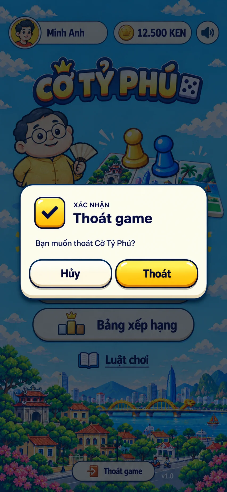

CỜ TỶ PHÚ · MODAL O5
Ảnh mẫu và bản dựng CSS
Cùng nền lobby. Hộp, badge, icon, nút và chữ bên phải được dựng bằng CSS/HTML, có thể bấm thử.

Dùng chuột hoặc Tab để thử nút. Chưa ghép vào game.
Đây là bản đối chiếu mỹ thuật theo ảnh: tỷ lệ badge/nút được canh theo từng mẫu. Font thật và icon CSS có thể còn khác nét ảnh AI. Ghi chú và cách dựng